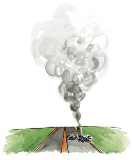
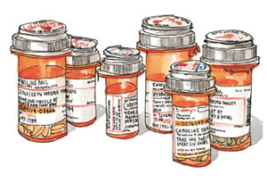
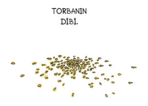
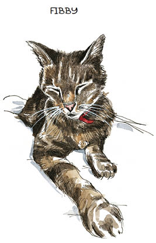
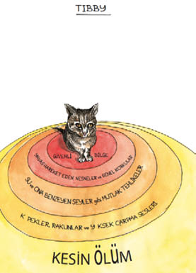
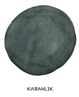
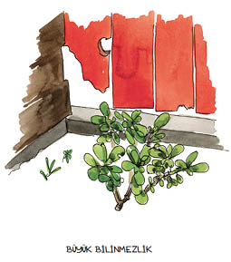

1
Günün birinde bir uçak kazası yaptım.

Kullandığım uçak, yelken bezi ve alüminyum borulardan ve bir de çim biçme makinesi motorundan ibaretti. Sanki işin uçma kısmı biraz şansa kalmışçasına buna “deneysel uçak” deniyor. Öyleydi zaten, en azından o gün. O gün, söz konusu deney başarısız oldu.
Serseme dönmüş bir halde ve kanlar içinde sürünerek enkazdan uzaklaştım; yanıma gelen ilk kişiye, “Lütfen 911’i aramayın,” dedim. Ama sallanan ayak bileğimin, şekli bozulmuş el bileğimin, başımdan yeşil uçuş giysime süzülen kanın, kafa karışıklığımın ve deneysel uçağımın, “kapatıyoruz” türü bir ucuzluk kampanyasının son dakikalarında çıkan bir arbede enkazını andıran, arkamda darmadağınık halde yere saçılmış parçalarının şüphe götürür tarafı yoktu.
Hastanede, “İç kanama ya da beyinde hasar yok,” dediler. “Ne kadar şanslı bir kızsınız böyle.” Hemşireler vızıldayan makineler taşıyarak ve kaşlarını çatarak profesyonel bir gayretkeşlikle etrafımda dolandı. Doktorlar oramı buramı kurcalayıp yokladı. Tibia ve fibulamda çok kötü kırıklar olduğu açıklandı.
Ağzımdaki kanın tadını alarak, kolumdaki bereleri hissederek, morfinden kaynaklanan bulanıklığın içinde gülerek, “Tibia ve fibula mı?” diye sordum. Onların kedilerim olduğunu açıkladığımda, hastane personeli ifadesiz yüzlerle baş sallamakla yetindi; onlara göre ben de sedyede halüsinasyon gören mankafalardan biriydim işte.
Halbuki doğru söylüyordum. Şefkatle verilmiş takma isimlerle Tibby ve Fibby diye çağrılan, on üçer yaşındaki iki sarman kedi o anda evde oturmuş, hangi cehennemde olduğumu ve eve neden gelmediğimi merak ediyordu.

Bunu takip eden birkaç gün boyunca, kız arkadaşım Wendy elimi tuttu ve beni her şeyin yolunda olduğuna ikna etti. Evde her şey yolunda, dedi. Tibby de Fibby de iyi. Sen de iyisin. Bana dondurma ve küçük kaplarda çikolatalı pudingler getirdi; ama yenmeden kaldılar. Hemşireler ziyaret saatlerinin sona erdiğini söyleyene dek rahatsız bir sandalyede uyudu, ertesi gün de aynı şeyi yeniden yapmak üzere geri geldi.
İlişkimiz yeniydi, aşkın bilinen herhangi bir fizik kuralına boyun eğmediği o evresindeydik. Geçtiğimiz altı ay, midelerimizde kelebeklerin uçuştuğu, yeryüzünün ayaklarımızın altından kaydığı, gökkuşaklarıyla kaplı, altın yıldızlı bulutlarla süslü bir dönemdi ve o süre boyunca birbirimize sadece mükemmel hallerimizi göstermiştik. Bu dönemin sona erdiğine kuşku yoktu. Aşırı derecede ilaç alıyordum, saçlarım çığrından çıkmıştı, yıkanmamıştım ve kırılgan bir haldeydim, birkaç da akıntılı yaram vardı. Kolumda bir bandaj, kafamda dikişler vardı ve sol ayak bileğim için acil ameliyat da tuz biber olmuştu. Wendy ellerini mavi kağıttan hastane geceliğimin üstünde dolaştırıp güzel göründüğümü söyledi.
Bacağım dikkatle yeniden bir araya getirildi ve o şekilde kalmasını sağlamak için metallerle hem içten hem de dıştan desteklendi. Cerrah, yüzünde şüphe uyandıracak derecede neşeyi andıran bir ifadeyle, bileğin tuzla buza dönmüş olduğunu açıkladı bize.
“Hani pakette patates cipsi kırıntıları kalır da yiyebilmek için torbayı ağzınıza eğmeniz gerekir ya, bileğiniz o kırıntılara benziyordu,” dedi; anlamamış olma ihtimalime karşı da torbayı ağzına eğme hareketini taklit etti. Kalçamın aşağısında uzanan kirişlere ve payandalara rağmen, hiçbir şey için söz veremeyeceğini belirtmek üzere omuz silkti, sonra da personele beni morfine boğmalarını buyurdu. İyileşme sürecimi takip ettiler, sonunda da beni San Francisco’ya, evime yolladılar.

Eve vardığımda Tibia ile Fibula mutlulukla miyavladı. Sürüp giden sersemlik halim gözlerini korkutmamıştı. Aslında buna bayılmışlardı; elindeki ışıklı plastik dikdörtgene bağıran, sürekli bilgisayara bakan, ayağa kalkıp ortalıktan yok olduktan ancak saatler sonra ön kapıda yeniden beliren insan olmaktan birdenbire çıkmıştım. Onun yerine, daima ellerinin altındaydım. İyi talihlerine inanamayarak bu işin tadını kedice çıkarmaya koyuldular. Kulaklarını kaşımamı, çenelerini okşamamı istiyor, bıyıklarını yüzüme sürüyorlardı. Kelimeleri yuvarlayarak yaptığım şefkat dolu bebekçe konuşmalara cevaben mırlıyorlardı. Ama çoğunlukla da rahatça yerleşip uykuya dalmakla yetiniyorlardı. Fibby boynuma doğru, Tibby de yakındaki halıda horluyordu. O arada ben de depresyonun kör kuyusunun etrafında dört dönerek uyanık yatıyordum.
Kedilerim olmasaydı doğruca yuvarlanırdım o kuyuya.
Wendy Kedi Meselesi’ni anlamıyordu. Fibby kucağına atlayacak olursa, kollarını üstü aranacakmış gibi havaya kaldırıyor; Tibby’nin başını tıpkı küçük bir ateşi söndürürmüş gibi yumuşak darbelerle okşuyordu. Ama ben konuşma zorluğu çeken aşırı heyecana kapılmış biri gibi cıvıldayıp anlaşılmaz şeyler söylemeye başladığımda, o da durumu çaktırmamaya çalışan bir ifade takınıp bütün bu velvelenin sebebini anlamaya çalışıyordu.
Ah, durun da sizi tanıştırayım. İşte Fibby. Her zamanki gibi rahatça uzanmış.
Nasıl da dünyanın hakimi olduğunu görüyor musunuz? Hem de uyurken bile. Enerjik ve sosyal olan oydu, insanların dikkatini çekmeyi her zaman severdi. Bütün kucaklar onun küçük, yuvarlacık göbeği için tasarlanmıştı; bütün burunlar da nazik patisini dayayabileceği yerlerdi. Arabamı garaja park ettiğim anda, genellikle yerinden fırlar, kederini miyavlayarak ifade ederek girişe doğru koştururdu. Miyavlamaları, nerelerdeydin der gibiydi. Neden o kadar uzun süre kaldın? Sonra ağır ağır gözlerini kapatır, gövdesini bacaklarıma dolar ve beni affederdi.

Tibby’nin onun erkek kardeşi olduğuna inanmak güçtü doğrusu. Tibbycik öyle endişeli ve utangaçtı ki. Size baktığında uzaylı bir yaratığın gözlerini üstünüze diktiğini düşünmenize neden olan, kocaman, koyu renkli, badem gözlü, iri bir kedi olması durumu değiştirmiyordu. Kaplan adımlarına ve çıngıraklıyılanınki gibi elmas biçimli bir yırtıcı kafasına sahip olması da öyle. Tibby kendisini minicik bir kedi zannediyordu, etrafta dünya yanlışlıkla üstüne basıverecekmiş gibi sinerek gezinirdi. Yüksek ses duydu mu yerinden sıçrar, yabancılardan kaçardı. Yemek yemek için herkesin ortalıktan çekilmesini beklerdi. Arka bahçede, sanki San Francisco’daki küçük bir bahçede değil de Serengeti Düzlükleri’ndeymiş gibi, aceleyle saklanacak yer arardı.
Sevgimin bu derin endişelerin üstesinden gelmesi konusunda ona yardımcı olamaması, onun kuraklığa dayanıklı Kaliforniya bitkilerinin altında aslanlar ve gergedanlar gören ilkel tarafına ulaşamamam beni her zaman şaşırtır ve üzerdi. Ama birlikte geçirdiğimiz yıllar sırasında bir noktada basit gerçeği kabul etmek zorunda kalmıştım: Tibby pısırığın tekiydi.

O anda, tuhaf bir biçimde Tibby’nin hislerini anlıyordum. Benimle ilgili her şey korku verici ve kırılgandı; yalnızca bileğim değil, zihnimdeki bir şey de. Zihnimdeki o şey uzun yaz günlerinde kendini eğlendirmek için insanı uykudan uyandıran türden dehşet verici kabuslar görüyor; bu kabuslarda uçaklar gümbürtüyle yere çarpıyor ve kan, uçuş giysisinin üstüne sızıyordu. Tekrar, tekrar, tekrar. Belki ilaçlar yüzündendi, belki travma sonrası stres bozukluğundan kaynaklanıyordu; belki de evrenin iyi olduğuna ve bizleri sevgiyle kucakladığına dair o insani yanılgıyı sol kanat ucunun bir çırpınışında yitirmiştim. Kısacası, her şeyin hep yolunda gitmediğini fark etmiştim. İşler hızla kötüleşebilir ve asla normale dönmeyebilir.

Haftalar geçti. Wendy bana kahramanca hemşirelik ediyordu, ama pek hoşsohbet değildim. Peşimde bir sondayla birlikte berbat bir koku sürüklüyordum. Gırtlağıma kadar ağrı kesiciler ve pişmanlıkla doluydum. İradem dışında bir şey yapacağından emin halde, bacağımı dikkatle gözleyerek saatlerce sırtüstü yatıyordum. Öyle ya, belki yana doğru sıçrar ya da zemine doğru yola koyulur veya belki ufacık bir üflemeyle bir milyon yeni parçaya ayrılırdı. Kısacası, biraz tuhaflaşmaya başlamıştım. Her gün, Wendy’nin bana doğru eğilip, artık canına yettiğini fısıldamasını ve kapıdan çıkıp gitmesini bekliyordum. Bunu yapsa onu kimse suçlayamazdı. Böyle bir yükün altına girilmesini meşrulaştıracak kadar uzun süredir birlikte değildik.
Yalnızca Tibia ile Fibula’ya güveniyordum. On üç yıldır beraberdik, yetişkin yaşantımın en uzun süreli ilişkileriydi bunlar. Her şey değişti belki, ama kedicikler değişmedi diye düşündüm boş boş tavana bakarken. Bu fikre sımsıkı sarılıyordum. Fibby hâlâ evin sahibiymiş gibi ortada dört dönüyordu; Tibby de köşelere siniyor, sevilmeye hazır halde bekliyordu, tabii Fibby izin verirse. Tibby ile Fibby bana, bu sıkıntılardan ve yaralanmadan önce bir hayat olduğunu hatırlatıyordu. Demek ki daha sonra da hayat olacaktı.
Derken, nekahat devrem birinci ayını doldurmuşken, ben de hâlâ yatağa bağlı, depresif, kıpırdayamaz, fazla miktarda Vicodin yüzünden sersemlemiş ve aşırı televizyon dolayısıyla uyuşmuşken, başka bir şey oldu.
Tibby ortadan kayboldu.
